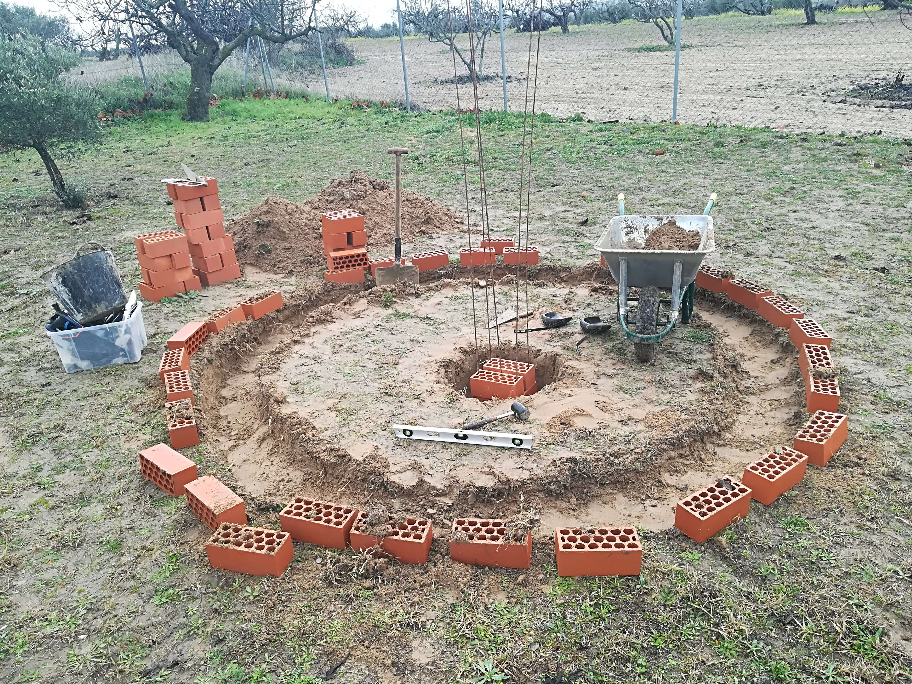
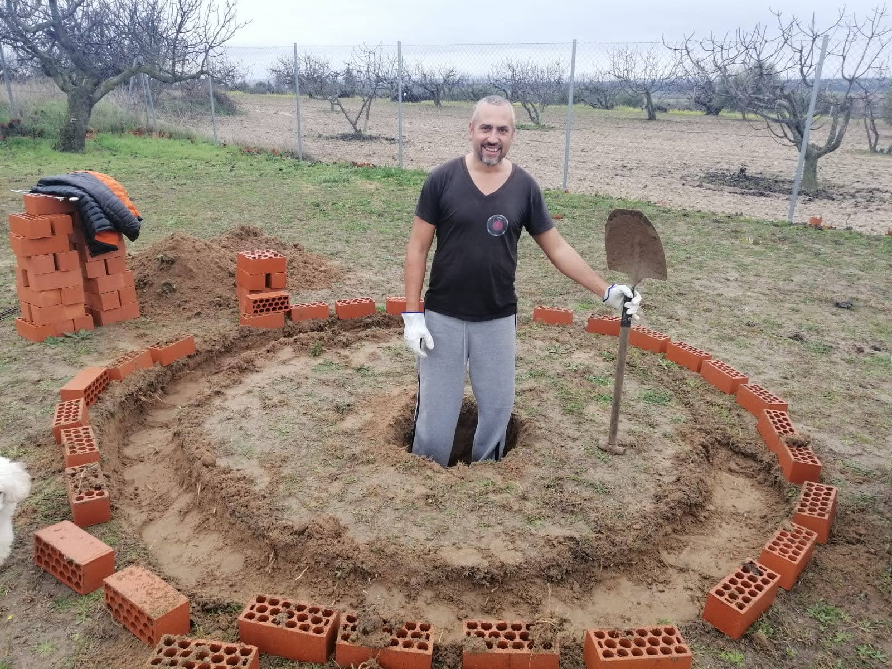
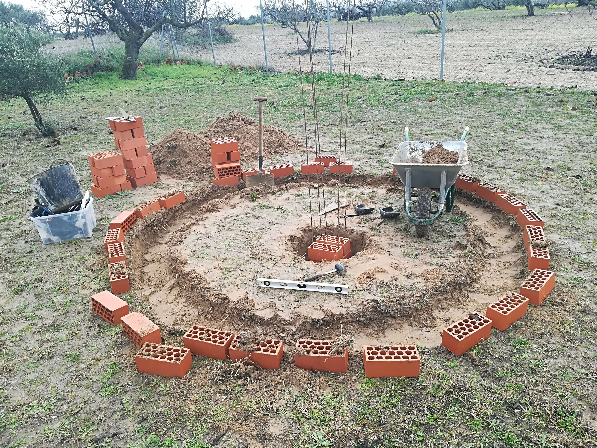
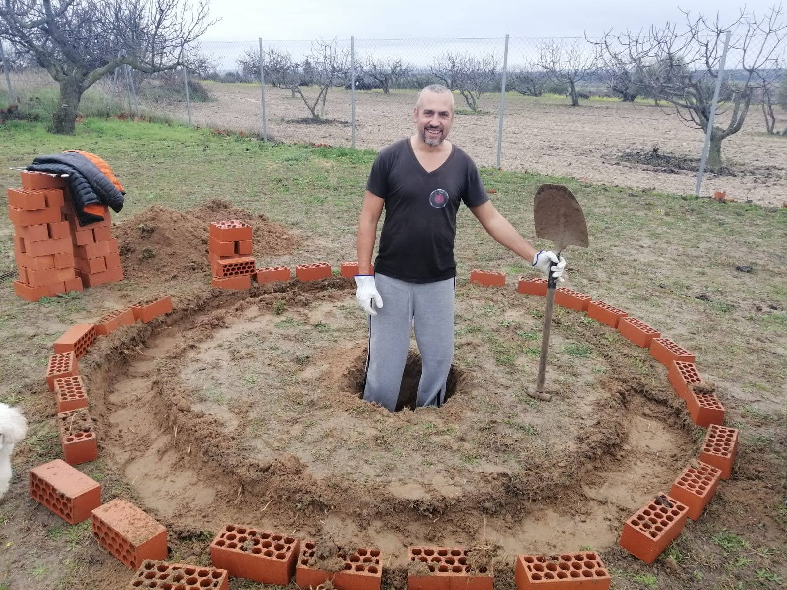
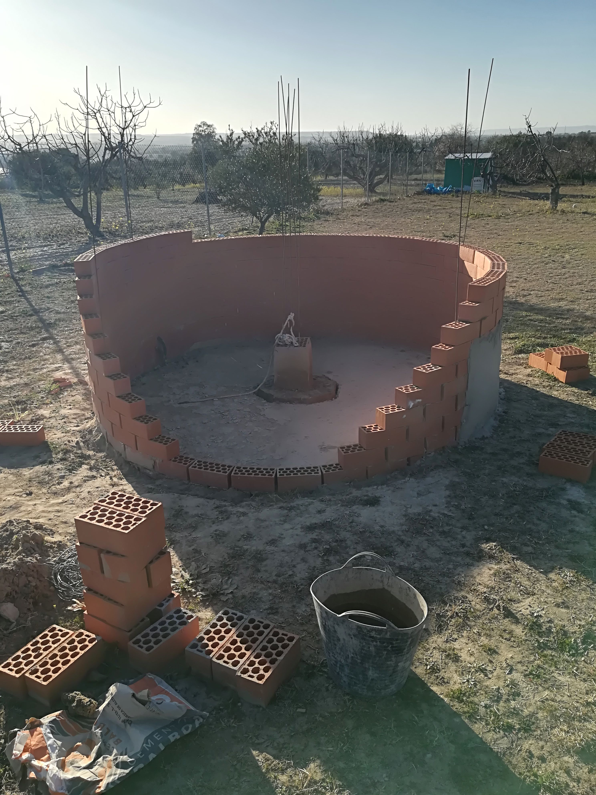
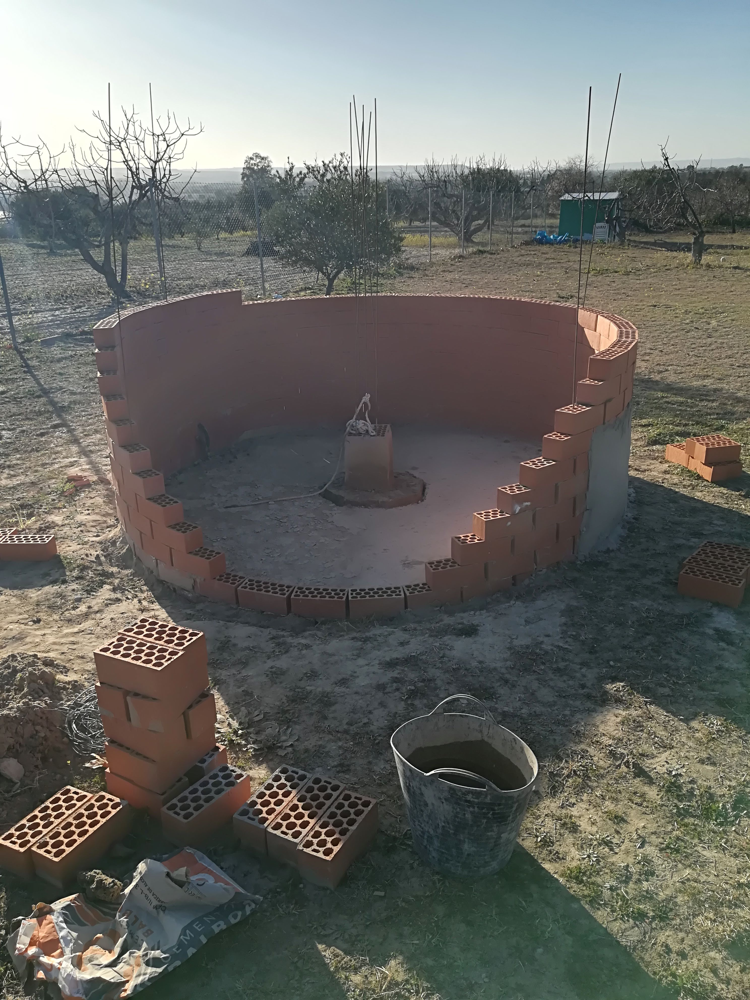
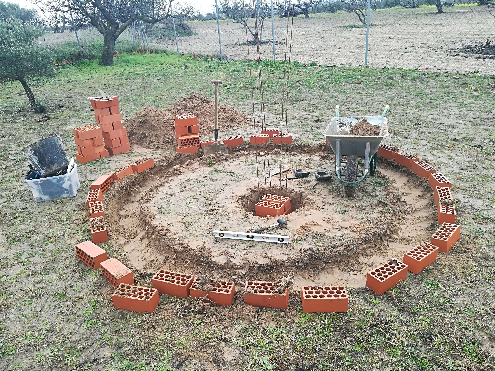
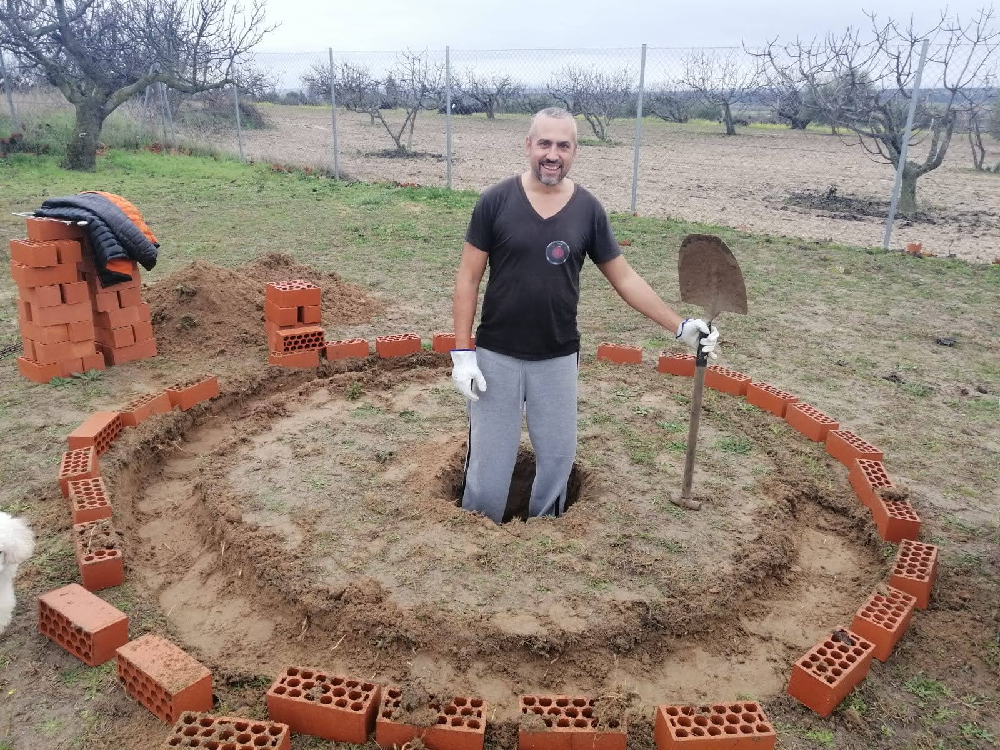
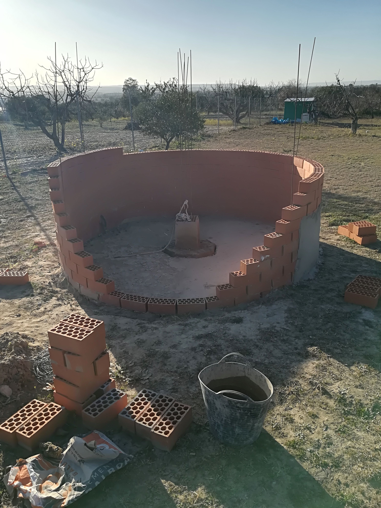

Cómo se hizo
 




 

Aquí iría un texto explicativo del proceso de construcción. Puedes contar cómo nació la idea, los materiales, dificultades y curiosidades.
Bajo el silencio del cielo, un sueño da sus primeras luces. Este observatorio no es solo una estructura: es un homenaje a la curiosidad, a la perseverancia y al asombro infinito que despierta el cosmos.
Armado con la tenacidad que solo la pasión puede darnos he podido construirlo con mis propias manos. Te invito a conocer este viaje de luz y sombra, donde la ingeniería DIY se encuentra con la imaginación y el frikismo.



Aquí iría un texto explicativo del proceso de construcción. Puedes contar cómo nació la idea, los materiales, dificultades y curiosidades.

Puedes escribirme a: TU_CORREO_AQUI